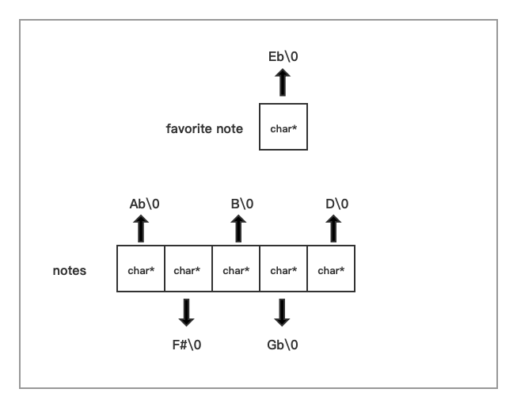
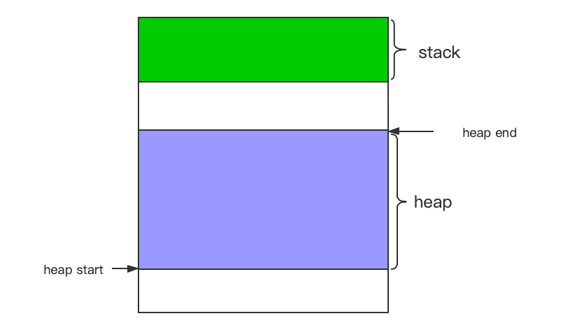
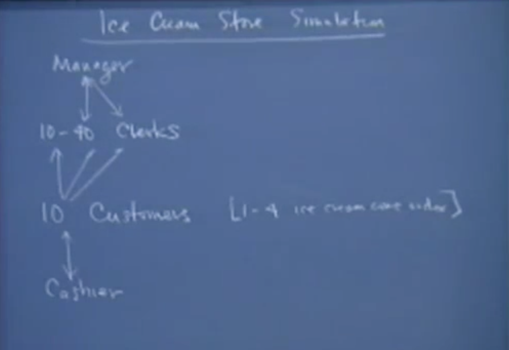

Lec 01-04
Foundations
C memory layout, pointers, casts, and generic pointer techniques.
Stanford Engineering Everywhere notes
Study C, C++, memory, assembly, and concurrency through a focused set of notes, diagrams, examples, and a reproducible Docker environment.
Course map
The material moves from representation and pointers into generic data structures, low-level machine behavior, and finally concurrent programs.

Lec 01-04
C memory layout, pointers, casts, and generic pointer techniques.

Lec 05-08
Generic stacks, allocation strategies, stack frames, and heap behavior.
Lec 09-14
Assembly, activation records, preprocessing, compiling, and linking.

Lec 15-18
Threads, semaphores, critical regions, and coordination patterns.
Lecture notes
No matching lecture notes.
Local lab
The repository includes a Linux-based environment for compiling examples, debugging with gdb, and checking memory behavior with valgrind.
make docker-build
make docker-shellmake examples
./build/examples/generic-pointer/generic_swapmake docker-debug-shell
gdb ./build/examples/dinningReference material